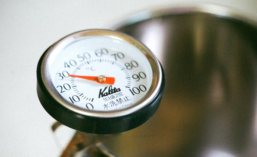
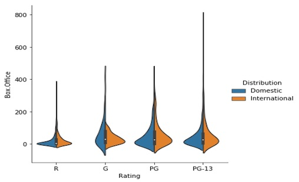
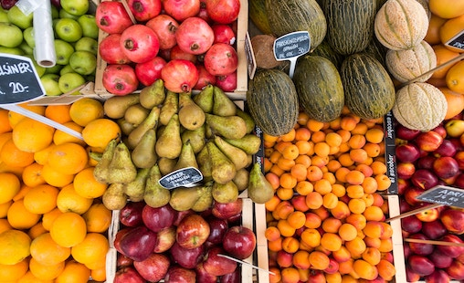
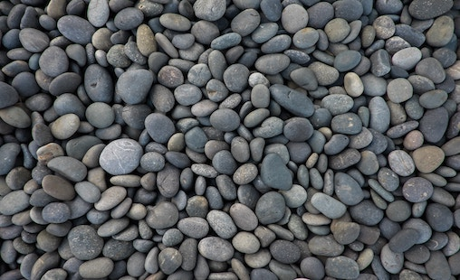

An application designed to find food places relatively quicker. This application presents a color coded view of the ratings there by enabling a easy pick option.
This application is intended to provide a snap shot of weather at your current location. The key idea is to provide concise information
This is an application that helps you stay hydrated. It has the ability to track your water usage and send reminders as required
An application that was built specifically for a friends trip to Cape May. It helps to quickly locate and identify the favourite spots by category.

The application gives very minimal, yet essential piece of information. However this application gave me my first encounter with the concepts of networking
This is my first single page application. Though its a single page, this application gave me immense confidence for more complicated endeavors.
The goal of the project is to take the text that belongs to different categories, train the model and identify the genre of a new piece of text.
The built in algorithm is able to successfully identify the similarity score between any two given documents. Dimensionality reduction techniques in action.

This project is a quick snapshot of visualizations that were performed on a kaggle dataset using python seaborn package.
This project was built using a sample data set from kaggale with an aim to predict to the insurance price based on the customers health profile.

This project was built using a sample data set from kaggle with an aim to predict to whether a customer will have heart disease or not based on the health attributes.

The project was built of publicly available LA bikeharing dataset. The aim is to cluster the stations based on the high throughput .
This is a minute by minute weather dataset from the years 2011 to 2014. The project goes in depth analysis of weather data as a function of time.
This project was built based on the artificial neural networks. The goal of the project was to predict the genre of the text based on the trained network.